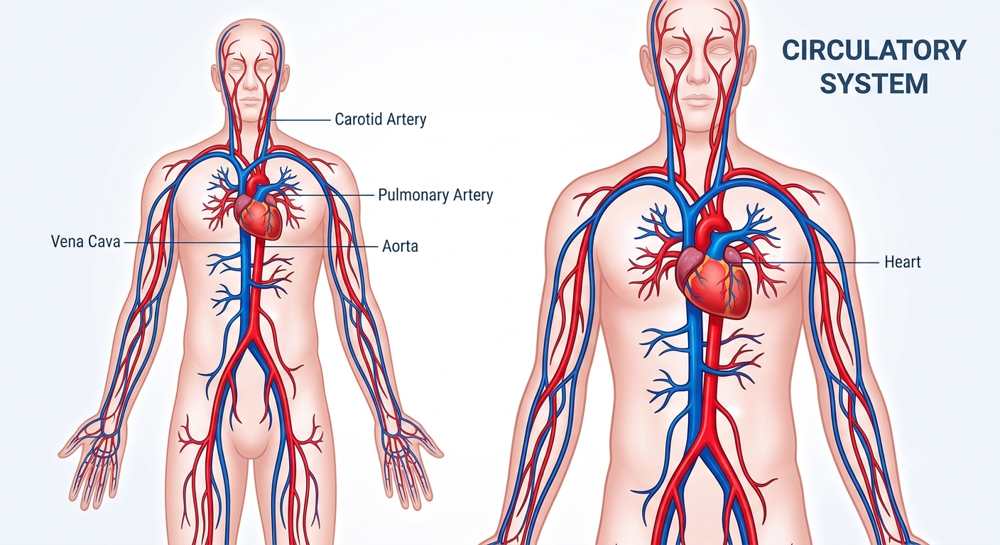
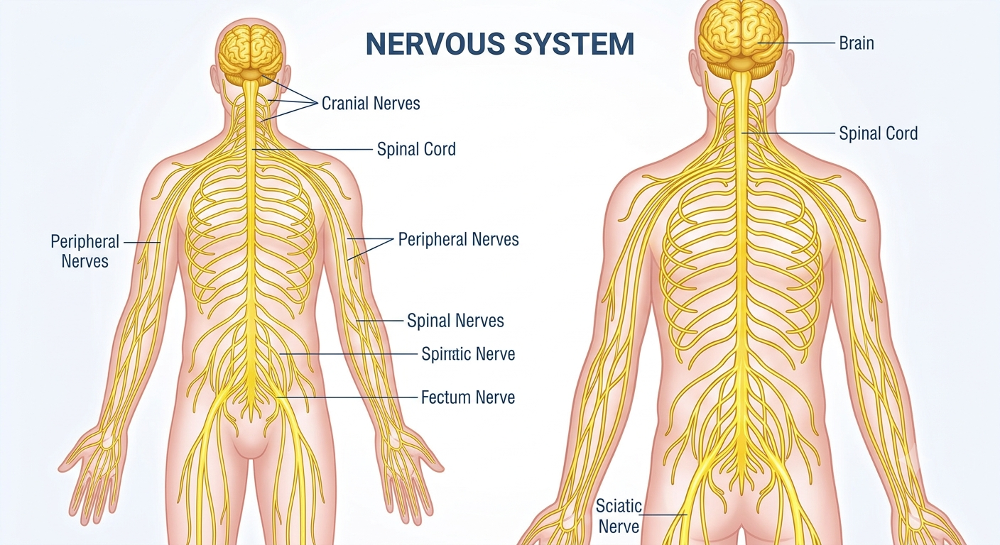
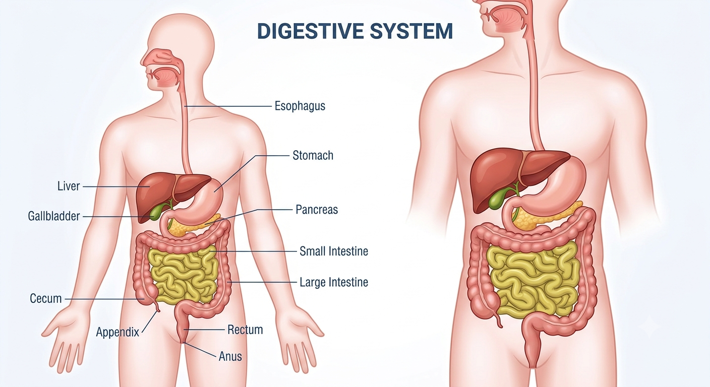

Introdução
O corpo humano é formado por diversos sistemas que trabalham juntos para nos manter vivos e saudáveis.
Sistemas do Corpo
Sistema Circulatório
Transporta oxigênio e nutrientes.

Sistema Nervoso
Comanda pensamentos e reflexos.

Sistema Digestório
Transforma alimentos em energia.

Curiosidades
O coração bate cerca de 100 mil vezes por dia, bombeando sangue para todo o corpo.